<title>ENFORZ Platform</title>
<meta name="viewport" content="width=device-width, initial-scale=1, viewport-fit=cover">
<meta name="claude:viewport-fit-sides" content="cover">
<link rel="stylesheet" href="https://fonts.googleapis.com/css2?family=Familjen+Grotesk:wght@500;600;700&family=Figtree:wght@400;500;600;700&family=IBM+Plex+Mono:wght@400;500&display=swap">

<style>
/* Layout: big type, short lines, one idea per tile. Everything long hides behind
   the Detail switch. Dark-first: indigo ground, amber signal, cyan second light. */
:root {
  --bg:#080B13; --bg2:#0C111C; --card:#121926; --card2:#18212F;
  --line:#242F45; --line2:#1A2232;
  --fg:#F0F3F8; --dim:#A6B2C6; --faint:#6D7B92;
  --amber:#9D8CFF; --cyan:#4DD0E1; --mint:#4FD6A9; --crit:#FF7A6B; --warn:#FFC95C;
  --a-dim:rgba(157,140,255,.15); --c-dim:rgba(77,208,225,.13);
  --m-dim:rgba(79,214,169,.13); --x-dim:rgba(255,122,107,.13); --w-dim:rgba(255,201,92,.13);
  --sh:0 28px 70px -40px rgba(0,0,0,.9);
  --f-h:'Familjen Grotesk','Helvetica Neue',Arial,sans-serif;
  --f-b:'Figtree','Helvetica Neue',Arial,sans-serif;
  --f-m:'IBM Plex Mono',ui-monospace,Menlo,monospace;
  --r:16px; --rs:10px;
  color-scheme: dark;
}
@media (prefers-color-scheme: light){:root:not([data-theme="dark"]){
  --bg:#F5F8FC; --bg2:#FFFFFF; --card:#FFFFFF; --card2:#EDF2F8;
  --line:#D6DFEC; --line2:#E6EBF3;
  --fg:#080D18; --dim:#4A586E; --faint:#6F7D91;
  --amber:#5B3DD6; --cyan:#116B7A; --mint:#0E7A5C; --crit:#C1332A; --warn:#8A5A00;
  --a-dim:rgba(91,61,214,.10); --c-dim:rgba(17,107,122,.09);
  --m-dim:rgba(14,122,92,.09); --x-dim:rgba(193,51,42,.09); --w-dim:rgba(138,90,0,.09);
  --sh:0 20px 48px -30px rgba(15,25,50,.3);
  color-scheme: light;
}}
:root[data-theme="light"]{
  --bg:#F5F8FC; --bg2:#FFFFFF; --card:#FFFFFF; --card2:#EDF2F8;
  --line:#D6DFEC; --line2:#E6EBF3;
  --fg:#080D18; --dim:#4A586E; --faint:#6F7D91;
  --amber:#5B3DD6; --cyan:#116B7A; --mint:#0E7A5C; --crit:#C1332A; --warn:#8A5A00;
  --a-dim:rgba(91,61,214,.10); --c-dim:rgba(17,107,122,.09);
  --m-dim:rgba(14,122,92,.09); --x-dim:rgba(193,51,42,.09); --w-dim:rgba(138,90,0,.09);
  --sh:0 20px 48px -30px rgba(15,25,50,.3);
  color-scheme: light;
}

*{box-sizing:border-box}
html{scroll-behavior:smooth;font-size:15px}
body{background:var(--bg);color:var(--fg);font-family:var(--f-b);font-size:16px;line-height:1.5;-webkit-font-smoothing:antialiased;overflow-x:hidden}
body::before{content:"";position:fixed;inset:0 0 auto;height:env(safe-area-inset-top,0px);z-index:60;background:var(--bg2)}
.band{width:100%}
.wrap{max-width:1130px;margin:0 auto;padding-left:max(16px,env(safe-area-inset-left,0px));padding-right:max(16px,env(safe-area-inset-right,0px))}
.sect{padding-block:clamp(42px,5.2vw,74px)}
.soft{background:var(--bg2);border-block:1px solid var(--line2)}
.ln{border-top:1px solid var(--line2)}

h1,h2,h3,h4{margin:0;font-family:var(--f-h);text-wrap:balance;letter-spacing:-.03em}
h1{font-size:clamp(2.15rem,5.8vw,3.95rem);font-weight:700;line-height:.98;letter-spacing:-.045em}
h2{font-size:clamp(1.5rem,3.2vw,2.3rem);font-weight:700;line-height:1.06;letter-spacing:-.038em}
h3{font-size:clamp(1rem,1.6vw,1.16rem);font-weight:600;line-height:1.25}
h4{font-size:.98rem;font-weight:600;letter-spacing:-.018em}
p{margin:0}
.k{font-family:var(--f-m);font-size:.72rem;letter-spacing:.17em;text-transform:uppercase;color:var(--amber)}
.lede{font-size:clamp(1rem,1.35vw,1.14rem);line-height:1.5;color:var(--dim);max-width:46ch}
.sub{font-size:.96rem;line-height:1.55;color:var(--dim);max-width:52ch}
.grad{background:linear-gradient(96deg,var(--amber),var(--cyan));-webkit-background-clip:text;background-clip:text;-webkit-text-fill-color:transparent;color:var(--amber)}
a{color:inherit}
:focus-visible{outline:2px solid var(--amber);outline-offset:3px;border-radius:8px}
.head{max-width:60ch}
.head h2{margin-top:11px}
.head .sub{margin-top:14px}

/* header */
section[id]{scroll-margin-top:calc(env(safe-area-inset-top,0px) + 74px)}
.hdr{position:sticky;top:env(safe-area-inset-top,0px);z-index:55;background:color-mix(in srgb,var(--bg2) 86%,transparent);backdrop-filter:blur(16px);border-bottom:1px solid var(--line2)}
.hin{display:flex;align-items:center;gap:12px;padding-block:11px}
.brand{display:flex;align-items:center;text-decoration:none;flex:none}
.brand img{height:30px;width:auto}
.ftr-lg{height:34px;width:auto;margin-bottom:14px}
img.lg-d{display:block}
img.lg-l{display:none}
@media(prefers-color-scheme:light){:root:not([data-theme="dark"]) img.lg-d{display:none}
  :root:not([data-theme="dark"]) img.lg-l{display:block}}
:root[data-theme="light"] img.lg-d{display:none}
:root[data-theme="light"] img.lg-l{display:block}
:root[data-theme="dark"] img.lg-d{display:block}
:root[data-theme="dark"] img.lg-l{display:none}
.hdr nav{margin-left:auto;display:flex;gap:2px}
.hdr nav{gap:3px}
.hdr nav a{font-family:var(--f-m);font-size:.73rem;font-weight:500;letter-spacing:.06em;text-transform:uppercase;color:var(--faint);text-decoration:none;padding:8px 12px;border-radius:999px;transition:.15s}
.hdr nav a:hover{color:var(--fg)}
.hdr nav a.on{color:var(--amber);background:color-mix(in srgb,var(--amber) 12%,transparent)}
.mb{display:none;flex:none;align-items:center;justify-content:center;width:42px;height:38px;border-radius:11px;
  background:var(--card);border:1px solid var(--line);cursor:pointer;transition:.15s;margin-left:auto}
.mb .bars{display:grid;gap:4px}
.mb .bars i{display:block;width:16px;height:2px;border-radius:2px;background:var(--dim);transition:transform .22s,opacity .18s}
.mb[aria-expanded="true"]{background:var(--card2);border-color:color-mix(in srgb,var(--amber) 55%,var(--line))}
.mb[aria-expanded="true"] .bars i:nth-child(1){transform:translateY(6px) rotate(45deg)}
.mb[aria-expanded="true"] .bars i:nth-child(2){opacity:0}
.mb[aria-expanded="true"] .bars i:nth-child(3){transform:translateY(-6px) rotate(-45deg)}
@media(max-width:1010px){
  .mb{display:flex}
  .hdr nav+.tgl{margin-left:6px}
  .hdr nav{position:absolute;left:0;right:0;top:100%;margin:0;z-index:54;
    display:grid;grid-template-columns:1fr;gap:5px;padding:12px 16px 16px;
    background:var(--bg2);backdrop-filter:blur(18px);
    border-bottom:1px solid var(--line2);box-shadow:var(--sh);
    visibility:hidden;opacity:0;transform:translateY(-8px);
    transition:opacity .2s,transform .2s,visibility .2s}
  .hdr nav.open{visibility:visible;opacity:1;transform:none}
  .hdr nav a{padding:14px 14px;font-size:.8rem;letter-spacing:.09em;border-radius:11px;background:var(--card);border:1px solid var(--line)}
  .hin{position:relative}
}

.tgl{margin-left:auto;display:inline-flex;align-items:center;gap:8px;font-family:var(--f-b);font-size:.78rem;font-weight:500;color:var(--dim);background:var(--card);border:1px solid var(--line);border-radius:999px;padding:6px 13px 6px 9px;cursor:pointer;transition:.15s;flex:none}
.hdr nav+.tgl{margin-left:6px}
.tgl:hover{color:var(--fg)}
.tgl .sw{width:27px;height:15px;border-radius:999px;background:var(--line);position:relative;flex:none;transition:.2s}
.tgl .sw::after{content:"";position:absolute;top:2px;left:2px;width:11px;height:11px;border-radius:50%;background:var(--faint);transition:.2s}
.tgl.hint{animation:tglpulse 3.4s ease-in-out infinite}
@keyframes tglpulse{
  0%,72%,100%{box-shadow:0 0 0 0 color-mix(in srgb,var(--amber) 0%,transparent);border-color:var(--line)}
  80%{box-shadow:0 0 0 4px color-mix(in srgb,var(--amber) 16%,transparent);border-color:color-mix(in srgb,var(--amber) 60%,var(--line))}
  88%{box-shadow:0 0 0 7px color-mix(in srgb,var(--amber) 0%,transparent);border-color:color-mix(in srgb,var(--amber) 35%,var(--line))}}
.tgl[aria-pressed="true"]{color:var(--fg);border-color:color-mix(in srgb,var(--amber) 55%,var(--line))}
.tgl[aria-pressed="true"] .sw{background:var(--a-dim)}
.tgl[aria-pressed="true"] .sw::after{transform:translateX(12px);background:var(--amber)}
@media(max-width:440px){.tgl .lb{display:none}}

/* detail reveal */
.d{display:none;margin-top:10px;padding:9px 11px;background:var(--card2);border-radius:8px;border-left:2px solid color-mix(in srgb,var(--amber) 55%,transparent);font-family:var(--f-m);font-size:.72rem;line-height:1.6;color:var(--faint);overflow-wrap:anywhere}
body.on .d{display:block}

/* icons */
.ic{width:20px;height:20px;flex:none;stroke:currentColor;fill:none;stroke-width:1.7;stroke-linecap:round;stroke-linejoin:round}
.ic-l{width:26px;height:26px}

/* hero */
.hero{position:relative;overflow:hidden;padding-block:clamp(46px,8vw,104px) clamp(40px,6vw,76px)}
.aur{position:absolute;inset:-30% -10% auto -10%;height:720px;pointer-events:none;opacity:.85;
  background:
   radial-gradient(42% 46% at 22% 36%,color-mix(in srgb,var(--amber) 26%,transparent),transparent 70%),
   radial-gradient(38% 42% at 74% 24%,color-mix(in srgb,var(--cyan) 24%,transparent),transparent 70%),
   radial-gradient(40% 40% at 54% 66%,color-mix(in srgb,var(--crit) 14%,transparent),transparent 72%);
  filter:blur(36px);animation:drift 26s ease-in-out infinite alternate}
@keyframes drift{0%{transform:translate3d(-2%,0,0) scale(1)}100%{transform:translate3d(3%,2%,0) scale(1.1)}}
.hin2{position:relative;display:grid;grid-template-columns:minmax(0,1.04fr) minmax(0,.96fr);gap:clamp(30px,5vw,58px);align-items:center}
@media(max-width:960px){.hin2{grid-template-columns:1fr}}
.hero h1{margin-top:15px}
.hero .lede{margin-top:19px}
.cta{margin-top:26px;display:flex;flex-wrap:wrap;gap:10px}
.b{display:inline-flex;align-items:center;gap:8px;text-decoration:none;font-weight:600;font-size:.9rem;padding:11px 19px;border-radius:999px;border:1px solid transparent;cursor:pointer;font-family:var(--f-b);transition:transform .16s,box-shadow .16s}
.b:hover{transform:translateY(-2px)}
.b1{background:linear-gradient(100deg,var(--amber),color-mix(in srgb,var(--amber) 70%,var(--crit)));color:#140A33;box-shadow:0 10px 30px -12px color-mix(in srgb,var(--amber) 60%,transparent)}
:root[data-theme="light"] .b1,:root:not([data-theme="dark"]) .b1{color:#FFF8EC}
@media(prefers-color-scheme:dark){:root:not([data-theme="light"]) .b1{color:#140A33}}
:root[data-theme="dark"] .b1{color:#140A33}
.b2{background:var(--card);border-color:var(--line);color:var(--fg)}
.chips{margin-top:24px;display:flex;flex-wrap:wrap;gap:7px}
.ch{font-family:var(--f-m);font-size:.72rem;letter-spacing:.03em;border:1px solid var(--line);color:var(--dim);padding:5px 10px;border-radius:999px;background:color-mix(in srgb,var(--card) 70%,transparent)}
.chan{margin-top:23px;display:flex;flex-wrap:wrap;gap:7px}
.cg{display:inline-flex;align-items:center;gap:7px;font-family:var(--f-b);font-size:.79rem;font-weight:600;line-height:1;padding:8px 13px;border-radius:999px;color:var(--fg);border:1px solid color-mix(in srgb,var(--mint) 40%,var(--line));background:color-mix(in srgb,var(--m-dim) 65%,transparent)}
.cg .ic{width:14px;height:14px;flex:none;color:var(--mint)}
.cg.out{border-color:color-mix(in srgb,var(--amber) 36%,var(--line));background:color-mix(in srgb,var(--a-dim) 60%,transparent)}
.cg.out .ic{color:var(--amber)}
.chn{margin-top:11px;font-size:.785rem;line-height:1.5;color:var(--faint);max-width:46ch}
.chn b{font-weight:600}.chn .g1{color:var(--mint)}.chn .g2{color:var(--amber)}

/* hero feed */
.feed{background:var(--card);border:1px solid var(--line);border-radius:var(--r);box-shadow:var(--sh);overflow:hidden;min-width:0}
.fh{display:flex;align-items:center;gap:9px;padding:13px 16px;border-bottom:1px solid var(--line2);background:var(--card2)}
.fh .t{font-family:var(--f-h);font-weight:600;font-size:.92rem}
.fh .e{margin-left:auto;font-size:.66rem;font-weight:600;letter-spacing:.07em;text-transform:uppercase;color:var(--faint);border:1px solid var(--line);padding:3px 8px;border-radius:999px}
.pulse{width:7px;height:7px;border-radius:50%;background:var(--crit);flex:none;animation:pl 2.4s ease-in-out infinite}
@keyframes pl{0%,100%{opacity:1}50%{opacity:.3}}
.feed .bdy{max-height:min(52vh,430px);overflow-y:auto;scrollbar-width:thin}
.fr{display:grid;grid-template-columns:auto minmax(0,1fr) auto;gap:11px;align-items:center;padding:12px 16px;transition:background .3s}
.fr+.fr{border-top:1px solid var(--line2)}
.fr.live{background:color-mix(in srgb,var(--amber) 7%,transparent)}
.fr .ii{width:26px;height:26px;border-radius:8px;display:grid;place-items:center;flex:none;background:var(--a-dim);color:var(--amber)}
.fr .w{display:block;font-size:.85rem;font-weight:500;line-height:1.35;min-width:0}
.fr .s{display:block;margin-top:2px;font-size:.72rem;color:var(--faint);line-height:1.4}
.fr .s b{color:var(--amber);font-weight:600}
.sv{font-size:.62rem;font-weight:700;letter-spacing:.09em;text-transform:uppercase;padding:4px 8px;border-radius:999px;white-space:nowrap}
.sv-c{background:var(--x-dim);color:var(--crit)}.sv-h{background:var(--w-dim);color:var(--warn)}
.sv-a{background:var(--a-dim);color:var(--amber)}.sv-r{background:var(--m-dim);color:var(--mint)}

/* stats */
.st .wrap{display:grid;grid-template-columns:repeat(auto-fit,minmax(142px,1fr));gap:16px 20px;padding-block:26px}
.s1 .n{font-family:var(--f-h);font-size:clamp(1.45rem,2.6vw,1.9rem);font-weight:700;letter-spacing:-.04em;font-variant-numeric:tabular-nums}
.s1 .l{font-size:.8rem;color:var(--dim);margin-top:1px;line-height:1.35}

/* marquee */
.mq{overflow:hidden;border-block:1px solid var(--line2);background:var(--bg2);padding-block:13px;mask-image:linear-gradient(90deg,transparent,#000 8%,#000 92%,transparent)}
.mqt{display:flex;gap:30px;width:max-content;animation:sl 42s linear infinite}
.mq:hover .mqt{animation-play-state:paused}
@keyframes sl{from{transform:translateX(0)}to{transform:translateX(-50%)}}
.mqi{font-family:var(--f-h);font-weight:600;font-size:.92rem;color:var(--faint);white-space:nowrap;display:flex;align-items:center;gap:9px}
.mqi::after{content:"";width:4px;height:4px;border-radius:50%;background:color-mix(in srgb,var(--amber) 70%,transparent)}

/* product tour */
.gal{margin-top:clamp(22px,3vw,32px)}
.galvid{width:100%;display:block;border-radius:var(--r);border:1px solid var(--line);background:#000;box-shadow:var(--sh)}

.galnote{margin-top:14px;display:flex;gap:10px;align-items:flex-start;font-size:.8rem;line-height:1.5;color:var(--faint)}
.galnote .bx{width:24px;height:24px;border-radius:8px;flex:none;display:grid;place-items:center;background:var(--m-dim);color:var(--mint)}

/* stepper */
.rail{margin-top:calc(clamp(26px,3.6vw,38px) - 5px);display:flex;gap:8px;overflow-x:auto;padding:5px 1px 6px}
.rail::-webkit-scrollbar{height:4px}.rail::-webkit-scrollbar-thumb{background:var(--line);border-radius:9px}
.sp{flex:1 1 0;min-width:158px;text-align:left;cursor:pointer;background:var(--card);border:1px solid var(--line);border-radius:var(--rs);padding:13px 14px;font-family:var(--f-b);transition:.2s;position:relative;overflow:hidden}
.sp:hover{transform:translateY(-2px)}
.sp .n{display:flex;align-items:center;gap:8px}
.sp .n i{font-style:normal;width:21px;height:21px;border-radius:999px;flex:none;display:grid;place-items:center;font-family:var(--f-m);font-size:.66rem;background:var(--card2);color:var(--faint);transition:.2s}
.sp .w{display:block;font-family:var(--f-m);font-size:.6rem;letter-spacing:.1em;text-transform:uppercase;color:var(--faint)}
.sp .ti{display:block;margin-top:8px;font-weight:600;font-size:.92rem;color:var(--dim);line-height:1.25;transition:.2s}
.sp[aria-selected="true"]{background:var(--card2);border-color:color-mix(in srgb,var(--amber) 60%,var(--line))}
.sp[aria-selected="true"] .n i{background:linear-gradient(140deg,var(--amber),var(--cyan));color:#140A33}
.sp[aria-selected="true"] .ti{color:var(--fg)}
.sp[aria-selected="true"]::after{content:"";position:absolute;inset:auto 0 0 0;height:2px;background:linear-gradient(90deg,var(--amber),var(--cyan))}
.pan{margin-top:19px;background:var(--card);border:1px solid var(--line);border-radius:var(--r);padding:clamp(20px,3vw,32px);box-shadow:var(--sh)}
.pan .k{color:var(--cyan)}
.pan h3{margin-top:8px;font-size:clamp(1.08rem,1.9vw,1.38rem);letter-spacing:-.03em}
.pan .one{margin-top:11px;font-size:.96rem;line-height:1.5;color:var(--dim);max-width:62ch}

/* tiles */
.tiles{margin-top:22px;display:grid;grid-template-columns:repeat(auto-fit,minmax(224px,1fr));gap:12px}
.ti{background:var(--card2);border:1px solid var(--line2);border-radius:var(--rs);padding:15px 16px;min-width:0;transition:.2s;position:relative}
.ti:hover{transform:translateY(-3px);border-color:color-mix(in srgb,var(--amber) 42%,var(--line))}
.ti .h{display:flex;align-items:center;gap:9px}
.ti .h .bx{width:28px;height:28px;border-radius:9px;display:grid;place-items:center;flex:none;background:var(--a-dim);color:var(--amber)}
.ti .nm{font-family:var(--f-h);font-weight:600;font-size:.94rem;line-height:1.3}
.ti .nm i{font-style:normal;color:var(--amber)}
.ti .tx{margin-top:9px;font-size:.855rem;line-height:1.5;color:var(--dim)}
.ti.cy .h .bx,.cy .bx{background:var(--c-dim);color:var(--cyan)}
.ti.mn .h .bx,.mn .bx{background:var(--m-dim);color:var(--mint)}

/* segmented tabs */
.segs{margin-top:clamp(24px,3.2vw,34px);display:flex;gap:7px;flex-wrap:wrap}
.sg{cursor:pointer;font-family:var(--f-b);font-weight:600;font-size:.92rem;background:var(--card);border:1px solid var(--line);color:var(--dim);padding:10px 18px;border-radius:999px;transition:.2s}
.sg:hover{color:var(--fg)}
.sg[aria-selected="true"]{background:linear-gradient(100deg,var(--amber),color-mix(in srgb,var(--amber) 72%,var(--crit)));border-color:transparent;color:#140A33}
:root[data-theme="light"] .sg[aria-selected="true"],:root:not([data-theme="dark"]) .sg[aria-selected="true"]{color:#FFF8EC}
@media(prefers-color-scheme:dark){:root:not([data-theme="light"]) .sg[aria-selected="true"]{color:#140A33}}
:root[data-theme="dark"] .sg[aria-selected="true"]{color:#140A33}
.wp{margin-top:18px;background:var(--card);border:1px solid var(--line);border-radius:var(--r);padding:clamp(20px,3vw,32px);box-shadow:var(--sh);display:grid;grid-template-columns:minmax(0,1fr) minmax(0,.88fr);gap:clamp(20px,3.4vw,40px)}
@media(max-width:880px){.wp{grid-template-columns:1fr}}
.q{display:flex;gap:10px;align-items:flex-start;font-family:var(--f-h);font-size:clamp(1rem,1.6vw,1.2rem);font-weight:600;line-height:1.28;letter-spacing:-.025em}
.q .m{flex:none;width:25px;height:25px;border-radius:50%;background:var(--a-dim);color:var(--amber);display:grid;place-items:center;font-size:.9rem;margin-top:1px}
.wp .ans{margin-top:14px;font-size:.94rem;line-height:1.55;color:var(--dim)}
.wp .ans b{color:var(--fg);font-weight:600}
.pts{margin:0;padding:0;list-style:none;display:grid;gap:12px}
.pts li{display:grid;grid-template-columns:auto minmax(0,1fr);gap:11px;align-items:start;font-size:.88rem;line-height:1.5;color:var(--dim)}
.pts .dt{width:21px;height:21px;border-radius:7px;background:var(--m-dim);color:var(--mint);display:grid;place-items:center;flex:none;margin-top:1px}
.pts b{color:var(--fg);font-weight:600}
.lbl{font-family:var(--f-m);font-size:.64rem;letter-spacing:.12em;text-transform:uppercase;color:var(--faint);margin-bottom:12px;display:block}

/* filter + grid */
.fl{margin-top:clamp(20px,2.8vw,30px);display:flex;gap:7px;flex-wrap:wrap;align-items:center}
.fc{cursor:pointer;font-family:var(--f-b);font-size:.84rem;font-weight:500;background:var(--card);border:1px solid var(--line);color:var(--dim);padding:7px 14px;border-radius:999px;transition:.16s}
.fc:hover{color:var(--fg)}
.fc[aria-pressed="true"]{background:var(--card2);border-color:color-mix(in srgb,var(--amber) 62%,var(--line));color:var(--fg)}
.cnt{font-size:.8rem;color:var(--faint);margin-left:4px}
.grid{margin-top:18px;display:grid;grid-template-columns:repeat(auto-fit,minmax(252px,1fr));gap:12px}
.mc{background:var(--card);border:1px solid var(--line);border-radius:var(--r);padding:17px 18px;min-width:0;transition:.2s}
.mc:hover{transform:translateY(-3px);border-color:color-mix(in srgb,var(--cyan) 45%,var(--line));box-shadow:var(--sh)}
.mc .h{display:flex;align-items:center;gap:9px}
.mc .bx{width:28px;height:28px;border-radius:9px;display:grid;place-items:center;flex:none;background:var(--c-dim);color:var(--cyan)}
.mc .nm{font-family:var(--f-h);font-weight:600;font-size:.96rem;line-height:1.3}
.mc .nm i{font-style:normal;color:var(--amber)}
.mc .subs{margin-top:8px;padding-top:8px;border-top:1px solid var(--line2);font-family:var(--f-m);font-size:.67rem;line-height:1.5;color:var(--faint);letter-spacing:.01em}
.mc .tx{margin-top:9px;font-size:.855rem;line-height:1.5;color:var(--dim)}

/* accordion technique tiles */
.acc{margin-top:20px;display:grid;grid-template-columns:1fr;gap:10px}
.at{background:var(--card);border:1px solid var(--line);border-radius:var(--r);overflow:hidden;min-width:0;transition:.2s}
.at:hover{border-color:color-mix(in srgb,var(--amber) 45%,var(--line))}
.at button{width:100%;text-align:left;background:none;border:0;cursor:pointer;padding:17px 18px;font-family:var(--f-b);color:inherit;display:grid;grid-template-columns:auto minmax(0,1fr) auto;gap:11px;align-items:center}
.at .bx{width:30px;height:30px;border-radius:9px;display:grid;place-items:center;flex:none;background:var(--a-dim);color:var(--amber)}
.at .nm{display:block;font-family:var(--f-h);font-weight:600;font-size:.96rem;line-height:1.25;min-width:0}
.at .sbt{display:block;margin-top:3px;font-size:.76rem;color:var(--faint);line-height:1.35}
.at .cv{width:18px;height:18px;color:var(--faint);transition:transform .26s cubic-bezier(.4,0,.2,1)}
.at.open{background:var(--card2);border-color:color-mix(in srgb,var(--amber) 52%,var(--line))}
.at.open .cv{transform:rotate(135deg);color:var(--amber)}
.at .nw{min-width:0}
.at .bdw{display:grid;grid-template-rows:0fr;overflow:hidden;transition:grid-template-rows .3s cubic-bezier(.4,0,.2,1)}
.at.open .bdw{grid-template-rows:1fr}
.at .bd{min-height:0;overflow:hidden;padding:0 18px;font-size:.855rem;line-height:1.55;color:var(--dim);box-shadow:inset 0 1px 0 var(--line2);transition:padding .3s cubic-bezier(.4,0,.2,1)}
.at.open .bd{padding-top:14px;padding-bottom:17px}
@media(min-width:720px){
  .at .nw{display:flex;align-items:baseline;gap:8px 16px;flex-wrap:wrap}
  .at .nm{flex:0 0 auto}
  .at .sbt{margin-top:0;min-width:0;flex:1 1 auto}
  .at .bd{padding-left:59px;padding-right:48px}
}
.at .bd ul{margin:10px 0 0;padding:0;list-style:none;display:grid;gap:6px}
.at .bd li{padding-left:14px;position:relative;font-size:.82rem;line-height:1.45}
.at .bd li::before{content:"";position:absolute;left:0;top:7px;width:5px;height:5px;border-radius:2px;background:color-mix(in srgb,var(--amber) 70%,transparent)}

/* cascade */
.flow{margin-top:clamp(22px,3vw,32px);display:grid;grid-template-columns:repeat(3,minmax(0,1fr));gap:12px}
@media(max-width:860px){.flow{grid-template-columns:1fr}}
.fs{background:var(--card);border:1px solid var(--line);border-radius:var(--r);padding:18px 19px;min-width:0;position:relative}
.fs.op{border-style:dashed}
.fs .hh{display:flex;align-items:center;gap:9px}
.fs .hh i{font-style:normal;width:26px;height:26px;border-radius:9px;flex:none;display:grid;place-items:center;font-size:.8rem;font-weight:700;background:linear-gradient(140deg,var(--amber),var(--cyan));color:#140A33}
.fs.op .hh i{background:var(--card2);color:var(--faint)}
.fs .sz{margin-top:11px;font-family:var(--f-m);font-size:.66rem;letter-spacing:.05em;text-transform:uppercase;color:var(--cyan)}
.fs .tx{margin-top:8px;font-size:.86rem;line-height:1.5;color:var(--dim)}
.rule{margin-top:13px;background:var(--card2);border:1px solid var(--line);border-radius:var(--rs);padding:16px 18px;display:grid;grid-template-columns:auto minmax(0,1fr);gap:13px;align-items:center}
.rule .vb{font-family:var(--f-m);font-size:.64rem;font-weight:500;letter-spacing:.07em;text-transform:uppercase;padding:5px 10px;border-radius:999px;white-space:nowrap;background:var(--m-dim);color:var(--mint)}
.rule .tx{font-size:.9rem;line-height:1.5;color:var(--dim)}
.rule .tx b{color:var(--fg);font-weight:600}

/* sandbox badges */
.gh{display:flex;align-items:center;gap:10px;flex-wrap:wrap;margin-top:clamp(24px,3.2vw,34px)}
.gh h3{font-size:1.08rem}
.bd2{display:inline-flex;align-items:center;gap:6px;font-size:.64rem;font-weight:700;letter-spacing:.07em;text-transform:uppercase;padding:4px 9px;border-radius:999px}
.bd-i{background:var(--m-dim);color:var(--mint)}.bd-o{background:var(--w-dim);color:var(--warn)}
.sbx{margin-top:14px;display:grid;grid-template-columns:repeat(auto-fit,minmax(214px,1fr));gap:11px}
.sb{background:var(--card);border:1px solid var(--line);border-radius:var(--rs);padding:14px 15px;min-width:0;transition:.2s}
.sb:hover{transform:translateY(-2px)}
.sb .nm{font-family:var(--f-h);font-weight:600;font-size:.9rem}
.sb .tx{margin-top:6px;font-size:.8rem;line-height:1.45;color:var(--dim)}
.sb .sh{margin-top:8px;font-family:var(--f-m);font-size:.66rem;line-height:1.45;color:var(--faint)}

/* honest */
.why{margin-top:clamp(26px,3.4vw,36px);border-left:3px solid var(--amber);padding:2px 0 2px clamp(16px,2.2vw,24px);max-width:64ch}
.why p{font-family:var(--f-h);font-size:clamp(1.12rem,2vw,1.5rem);font-weight:600;line-height:1.32;letter-spacing:-.025em}
.why p+p{margin-top:13px;font-family:var(--f-b);font-size:.9rem;font-weight:400;line-height:1.6;letter-spacing:0;color:var(--dim)}
.hon{margin-top:clamp(24px,3.2vw,34px);background:var(--card2);border:1px solid var(--line);border-radius:var(--r);padding:clamp(20px,3vw,30px)}
.hon h3{font-size:1.1rem}
.hl{margin:16px 0 0;padding:0;list-style:none;display:grid;gap:12px}
.hl li{display:grid;grid-template-columns:auto minmax(0,1fr);gap:11px;align-items:start;font-size:.875rem;line-height:1.5;color:var(--dim)}
.hl li .nn{width:20px;height:20px;border-radius:6px;background:var(--card);border:1px solid var(--line);color:var(--faint);display:grid;place-items:center;font-size:.66rem;font-weight:700;flex:none;margin-top:1px;font-family:var(--f-m)}
.hl b{color:var(--fg);font-weight:600}

/* close */
.cl{padding-block:clamp(48px,6.5vw,86px);text-align:center;position:relative;overflow:hidden}
.cl h2{max-width:22ch;margin-inline:auto}
.cl .lede{margin:16px auto 0;max-width:50ch}
.cl .cta{justify-content:center}
.ftr{border-top:1px solid var(--line2);background:var(--bg2)}
.ftr .wrap{padding-block:28px;display:flex;gap:16px;flex-wrap:wrap;align-items:center}
.ftr .nt{font-size:.8rem;color:var(--faint);line-height:1.6;max-width:56ch}
.ftr .rt{margin-left:auto;font-family:var(--f-m);font-size:.74rem;color:var(--faint)}
@media(max-width:700px){.ftr .rt{margin-left:0}}

/* Touch targets and legibility on phones: 44px-ish hit areas, no sub-11px type. */
@media(max-width:820px){
  .fc{padding:11px 15px;font-size:.86rem}
  .tgl{padding:10px 14px 10px 11px;font-size:.8rem}
  .brand{padding:5px 2px}
  .brand img{height:28px}
  .sv{font-size:.72rem;padding:5px 9px}
  .fh .e{font-size:.7rem;padding:4px 9px}
  .k{font-size:.76rem;letter-spacing:.14em}
  .ch{font-size:.76rem;padding:7px 12px}
  .sg{padding:12px 18px}
  .hdr nav a{padding-block:10px}
  .sp .w{font-size:.72rem;letter-spacing:.08em}
  .brand{padding:7px 4px}
}

@media(prefers-reduced-motion:reduce){
  html{scroll-behavior:auto}
  *,*::before,*::after{animation:none!important;transition:none!important}
  .b:hover,.ti:hover,.mc:hover,.sp:hover,.sb:hover{transform:none}
}
/* Phone legibility. The root font is 15px, so rem-based micro-labels land at
   9.6-11.1px on a handset. Floored here, at the end of the sheet and with the
   same specificity as the rules they override, plus 44px touch targets. */
@media(max-width:820px){
  .k,.ch{font-size:12px}
  .at .sbt{font-size:12px}
  .lbl,.bd2{font-size:11.5px}
  .rule .vb{font-size:11.5px}
  .fs .sz{font-size:11.5px}
  .sb .sh{font-size:11.5px}
  .mc .subs{font-size:11.5px;line-height:1.5}
  .hl li .nn{font-size:11.5px;width:22px;height:22px}
  .ftr .rt{font-size:12.5px}
  .sp .w{font-size:12px}
  .fh .e{font-size:11.5px}
  .sv{font-size:11.5px}
  .mb{min-width:44px;min-height:44px}
  .tgl{min-height:44px}
  .fc{min-height:44px}
  .hdr nav a{min-height:44px;display:flex;align-items:center}
}
</style>

<svg width="0" height="0" style="position:absolute" aria-hidden="true"><defs>
<symbol id="i-mail" viewBox="0 0 24 24"><rect x="2" y="5" width="20" height="14" rx="2"/><path d="m2.5 6.5 9.5 7 9.5-7"/></symbol>
<symbol id="i-search" viewBox="0 0 24 24"><circle cx="10.5" cy="10.5" r="6.5"/><path d="m15.5 15.5 4.5 4.5"/></symbol>
<symbol id="i-shield" viewBox="0 0 24 24"><path d="M12 3l7 3v5c0 5-3 8-7 10-4-2-7-5-7-10V6z"/><path d="m9 12 2 2 4-4"/></symbol>
<symbol id="i-eye" viewBox="0 0 24 24"><path d="M2 12s3.5-6 10-6 10 6 10 6-3.5 6-10 6-10-6-10-6z"/><circle cx="12" cy="12" r="2.6"/></symbol>
<symbol id="i-globe" viewBox="0 0 24 24"><circle cx="12" cy="12" r="9"/><path d="M3 12h18M12 3c3 3 3 15 0 18M12 3c-3 3-3 15 0 18"/></symbol>
<symbol id="i-radar" viewBox="0 0 24 24"><circle cx="12" cy="12" r="9"/><circle cx="12" cy="12" r="4.6"/><path d="M12 12 19 7"/></symbol>
<symbol id="i-target" viewBox="0 0 24 24"><circle cx="12" cy="12" r="8.5"/><circle cx="12" cy="12" r="4"/><circle cx="12" cy="12" r="1"/></symbol>
<symbol id="i-chat" viewBox="0 0 24 24"><path d="M21 12a7 7 0 0 1-7 7H9l-5 3 1.2-4A7 7 0 0 1 10 5h4a7 7 0 0 1 7 7z"/></symbol>
<symbol id="i-cloud" viewBox="0 0 24 24"><path d="M7 18a4 4 0 0 1 .5-8 5.5 5.5 0 0 1 10.6 1.4A3.6 3.6 0 0 1 17.5 18z"/></symbol>
<symbol id="i-file" viewBox="0 0 24 24"><path d="M14 3H7a2 2 0 0 0-2 2v14a2 2 0 0 0 2 2h10a2 2 0 0 0 2-2V8z"/><path d="M14 3v5h5"/></symbol>
<symbol id="i-qr" viewBox="0 0 24 24"><rect x="3" y="3" width="7" height="7" rx="1"/><rect x="14" y="3" width="7" height="7" rx="1"/><rect x="3" y="14" width="7" height="7" rx="1"/><path d="M14 14h3v3h-3zM20 17v4h-3"/></symbol>
<symbol id="i-phone" viewBox="0 0 24 24"><path d="M5 3h3l2 5-2.2 1.6a12 12 0 0 0 6.6 6.6L16 14l5 2v3a2 2 0 0 1-2 2A16 16 0 0 1 3 5a2 2 0 0 1 2-2z"/></symbol>
<symbol id="i-usb" viewBox="0 0 24 24"><path d="M12 21V7"/><path d="m9 10 3-7 3 7z"/><path d="M12 15l4.5-3V9M12 17l-4.5-3v-2"/></symbol>
<symbol id="i-video" viewBox="0 0 24 24"><rect x="2.5" y="6" width="13" height="12" rx="2"/><path d="m16 11 5.5-3v8L16 13z"/></symbol>
<symbol id="i-cpu" viewBox="0 0 24 24"><rect x="6.5" y="6.5" width="11" height="11" rx="2"/><path d="M10 10h4v4h-4zM12 3v3.5M12 17.5V21M3 12h3.5M17.5 12H21M6 3.5v1M18 3.5v1"/></symbol>
<symbol id="i-lock" viewBox="0 0 24 24"><rect x="4.5" y="10.5" width="15" height="10" rx="2"/><path d="M8 10.5V8a4 4 0 0 1 8 0v2.5"/></symbol>
<symbol id="i-cert" viewBox="0 0 24 24"><circle cx="12" cy="9.5" r="5.5"/><path d="m8.5 14.5-.5 6 4-2 4 2-.5-6"/></symbol>
<symbol id="i-flask" viewBox="0 0 24 24"><path d="M9 3h6M10 3v5l-5 9a2 2 0 0 0 1.8 3h10.4A2 2 0 0 0 19 17l-5-9V3"/><path d="M7.5 14h9"/></symbol>
<symbol id="i-bolt" viewBox="0 0 24 24"><path d="M13.5 2 5 13h6l-1.5 9 8.5-11h-6z"/></symbol>
<symbol id="i-key" viewBox="0 0 24 24"><circle cx="8" cy="8" r="4.5"/><path d="m11.2 11.2 9 9M17 17l2-2M14 14l2-2"/></symbol>
<symbol id="i-plus" viewBox="0 0 24 24"><path d="M12 5v14M5 12h14"/></symbol>
<symbol id="i-grid" viewBox="0 0 24 24"><rect x="3" y="3" width="7.5" height="7.5" rx="1.5"/><rect x="13.5" y="3" width="7.5" height="7.5" rx="1.5"/><rect x="3" y="13.5" width="7.5" height="7.5" rx="1.5"/><rect x="13.5" y="13.5" width="7.5" height="7.5" rx="1.5"/></symbol>
</defs></svg><header class="hdr">
  <div class="wrap hin">
    <a class="brand" href="#top" aria-label="ENFORZ"></a>
    <nav id="nav">
      <a href="#tour">Watch it</a>
      <a href="#why">The problem</a>
      <a href="#loop">The loop</a>
      <a href="#safe">Safety</a>
      <a href="#mods">Modules</a>
      <a href="#about">Why free</a>
    </nav>
    <button class="mb" id="mb" type="button" aria-expanded="false" aria-controls="nav" aria-label="Sections"><span class="bars" aria-hidden="true"><i></i><i></i><i></i></span></button>
    <button class="tgl" id="tg" type="button" aria-pressed="false"><span class="sw" aria-hidden="true"></span><span class="lb">Detail</span></button>
  </div>
</header>

<section class="band hero">
  <div class="aur" aria-hidden="true"></div>
  <div class="wrap hin2">
    <div>
      <span class="k">ENFORZ &middot; Trust. Control. Enforce.</span>
      <h1>Nothing runs unless <span class="grad">you said so</span>.</h1>
      <p class="lede">Antivirus asks whether a program looks bad. Application control asks whether you allowed it. Ransomware you have never seen, a signed tool turned against you, a script from an email: none of it starts, because it was never on the list.</p>
      <div class="cta">
        <a class="b b1" href="#loop">How it works <svg class="ic" aria-hidden="true"><use href="#i-bolt"/></svg></a>
        <a class="b b2" href="#safe">Can it brick my fleet?</a>
      </div>
      <div class="chan">
        <span class="cg"><svg class="ic" aria-hidden="true"><use href="#i-file"/></svg>Executables</span><span class="cg"><svg class="ic" aria-hidden="true"><use href="#i-cpu"/></svg>Drivers</span><span class="cg"><svg class="ic" aria-hidden="true"><use href="#i-bolt"/></svg>Scripts</span><span class="cg"><svg class="ic" aria-hidden="true"><use href="#i-grid"/></svg>Installers</span><span class="cg"><svg class="ic" aria-hidden="true"><use href="#i-lock"/></svg>DLLs</span>
      </div>
      <p class="chn">Windows enforces the list in the kernel. Everything above has to be allowed before it is permitted to load.</p>
      <div class="chips">
        <span class="ch">Built from your own fleet</span>
        <span class="ch">No rule without a human</span>
        <span class="ch">Audit first, always</span>
      </div>
    </div>
    <div>
      <div class="feed">
        <div class="fh"><span class="pulse" aria-hidden="true"></span><span class="t">Waiting on you</span><span class="e">Example</span></div>
        <div class="bdy">
        <div class="fr live" data-f><span class="ii"><svg class="ic" aria-hidden="true"><use href="#i-grid"/></svg></span><span><span class="w">41,882 block events collapsed into 23 decisions</span><span class="s">Signal from <b>Review queue</b></span></span><span class="sv sv-a">Action</span></div>
        <div class="fr" data-f><span class="ii"><svg class="ic" aria-hidden="true"><use href="#i-key"/></svg></span><span><span class="w">An unsigned tool is running from a folder users can write to</span><span class="s">Signal from <b>Suspicious blocks</b></span></span><span class="sv sv-c">Urgent</span></div>
        <div class="fr" data-f><span class="ii"><svg class="ic" aria-hidden="true"><use href="#i-cpu"/></svg></span><span><span class="w">A loaded driver matches a known-vulnerable list</span><span class="s">Signal from <b>Vulnerabilities</b></span></span><span class="sv sv-c">Urgent</span></div>
        <div class="fr" data-f><span class="ii"><svg class="ic" aria-hidden="true"><use href="#i-flask"/></svg></span><span><span class="w">Simulation says this draft would stop 6 machines working</span><span class="s">Signal from <b>Simulation</b></span></span><span class="sv sv-h">High</span></div>
        <div class="fr" data-f><span class="ii"><svg class="ic" aria-hidden="true"><use href="#i-eye"/></svg></span><span><span class="w">A machine is running a policy nobody deployed</span><span class="s">Signal from <b>Drift</b></span></span><span class="sv sv-h">High</span></div>
        <div class="fr" data-f><span class="ii"><svg class="ic" aria-hidden="true"><use href="#i-radar"/></svg></span><span><span class="w">A binary nobody recognises was seen on four machines at once</span><span class="s">Signal from <b>Hash reputation</b></span></span><span class="sv sv-r">Review</span></div>
        <div class="fr" data-f><span class="ii"><svg class="ic" aria-hidden="true"><use href="#i-shield"/></svg></span><span><span class="w">A break-glass window is open and expires in 42 minutes</span><span class="s">Signal from <b>Break-glass</b></span></span><span class="sv sv-a">Action</span></div>
        <div class="fr" data-f><span class="ii"><svg class="ic" aria-hidden="true"><use href="#i-globe"/></svg></span><span><span class="w">Pilot ring has soaked for 14 days with no new blocks</span><span class="s">Signal from <b>Rollout</b></span></span><span class="sv sv-r">Review</span></div>
        </div>
      </div>
    </div>
  </div>
</section>

<section class="band soft st">
  <div class="wrap">
    <div class="s1"><div class="n">41k</div><div class="l">events become 23 decisions</div></div>
    <div class="s1"><div class="n">14</div><div class="l">gates before enforcement</div></div>
    <div class="s1"><div class="n">6</div><div class="l">rule levels to choose from</div></div>
    <div class="s1"><div class="n">100%</div><div class="l">of rules approved by a person</div></div>
  </div>
</section>
<section class="band sect" id="tour">
  <div class="wrap">
    <div class="head">
      <span class="k">Product tour</span>
      <h2>The console, end to end</h2>
      <p class="sub">A complete walkthrough of the working product: forty thousand block events arriving, collapsing into decisions, becoming a policy, and reaching a first machine under enforcement. The organisation shown is fictitious, so the recording can be shared without restriction.</p>
    </div>
    <div class="gal">
      <video class="galvid" controls preload="none" poster="tour/poster.webp" playsinline>
        <source src="tour/enforz-walkthrough.webm" type="video/webm">
        Your browser cannot play this walkthrough.
      </video>
      <p class="galnote"><span class="bx"><svg class="ic" aria-hidden="true" style="width:14px;height:14px"><use href="#i-shield"/></svg></span><span>Every machine name, publisher, person and network detail in this recording is fictitious. No customer environment appears at any point.</span></p>
    </div>
  </div>
</section>

<section class="band soft sect" id="why">
  <div class="wrap">
    <div class="head">
      <span class="k">Why this is hard</span>
      <h2>Everyone agrees allowlisting works. <span class="grad">Almost nobody runs it.</span></h2>
      <p class="sub">Not because the idea is wrong. Because the two things standing in the way have never been solved properly: the firehose, and the fear.</p>
    </div>
    <div class="tiles" style="margin-top:clamp(24px,3.2vw,34px)">
      <div class="ti"><div class="h"><span class="bx"><svg class="ic" aria-hidden="true"><use href="#i-grid"/></svg></span><span class="nm">The firehose</span></div><p class="tx">Switch Windows into audit mode and a few hundred machines will hand you tens of thousands of "would have blocked" lines in a week. There is no human path from that to a short, durable list of rules.</p><div class="d">Every launch of every binary logs an event. The same application appears thousands of times, under different paths, versions and users, with the signer recorded in a separate event that has to be matched back by activity before anything is readable.</div></div>
      <div class="ti"><div class="h"><span class="bx"><svg class="ic" aria-hidden="true"><use href="#i-lock"/></svg></span><span class="nm">The fear</span></div><p class="tx">A mistake here does not file a bug report. It stops a machine booting, and it does it to every machine you sent the policy to, at once, including the one you would have used to fix it.</p><div class="d">An allowlist that omits a boot driver, or that blocks the management agent, removes your own route back in. This is why most teams get as far as audit mode and stop there.</div></div>
      <div class="ti"><div class="h"><span class="bx"><svg class="ic" aria-hidden="true"><use href="#i-bolt"/></svg></span><span class="nm">So it stays in audit</span></div><p class="tx">Audit mode logs what it would have stopped and stops nothing. Plenty of organisations have been "about to enforce" for two years, collecting evidence of attacks they did not prevent.</p></div>
      <div class="ti"><div class="h"><span class="bx"><svg class="ic" aria-hidden="true"><use href="#i-cert"/></svg></span><span class="nm">And then it never ends</span></div><p class="tx">Even a rollout that succeeds leaves somebody owning it permanently. Every update changes a version, every new starter needs software, every vendor re-signs with a new certificate, and each one of those is a block, a ticket and a person waiting.</p><div class="d">This is the part nobody budgets for. Organisations that get application control enforced often give it back eighteen months later, not because it stopped working, but because the one person maintaining it moved on.</div></div>
      <div class="ti cy"><div class="h"><span class="bx"><svg class="ic" aria-hidden="true"><use href="#i-shield"/></svg></span><span class="nm">What it is worth</span></div><p class="tx">Enforced application control stops the entire category: ransomware, living-off-the-land tools, unsigned scripts, anything an attacker drops after a phish. Not because it recognised the threat, but because the threat is not on the list.</p></div>
    </div>
    <div class="rule" style="margin-top:clamp(20px,2.6vw,28px)">
      <span class="vb">What it costs</span>
      <p class="tx">A conventional application control project is measured in <b>weeks to months</b> before a single machine enforces, and in a permanent share of somebody's week afterwards. Most of that is not decision-making. It is reading event logs, matching signer records back to blocks by hand, maintaining spreadsheets of hashes, and rebuilding a policy every time a vendor ships an update.<span class="d">That work is mechanical, and it is exactly the part that gets dropped first when the person doing it is busy, which is how a policy quietly drifts out of date until somebody switches it back to audit.</span></p>
    </div>
    <div class="rule" style="margin-top:14px">
      <span class="vb">With ENFORZ</span>
      <p class="tx">The same estate goes from first telemetry to a reviewed draft policy in an afternoon, and the first ring enforces in days rather than quarters. <b>But the point is not the fast start.</b> It is that the ongoing life of the policy is the same short loop, every time: new software appears as a decision, you approve it, the next build carries it, simulation checks it, and the rings move on their own soak timers.<span class="d">Updates to software you already approved usually need no decision at all, because the rule was written against the publisher rather than the version. Recertification, expiry, drift and coverage are each a page with a number on it rather than a task somebody has to remember.</span></p>
    </div>
  </div>
</section>

<section class="band ln sect" id="loop">
  <div class="wrap">
    <div class="head">
      <span class="k">How it works</span>
      <h2>From forty thousand events to <span class="grad">a policy you trust</span></h2>
      <p class="sub">Five steps. Nothing is enforced until the four before it are done.</p>
    </div>

    <div class="rail" role="tablist" aria-label="Stages">
      <button class="sp" role="tab" id="t1" aria-controls="p1" aria-selected="true"><span class="n"><i>1</i><span class="w">Watch</span></span><span class="ti">In audit mode</span></button>
      <button class="sp" role="tab" id="t2" aria-controls="p2" aria-selected="false"><span class="n"><i>2</i><span class="w">Collapse</span></span><span class="ti">Thousands to tens</span></button>
      <button class="sp" role="tab" id="t3" aria-controls="p3" aria-selected="false"><span class="n"><i>3</i><span class="w">Decide</span></span><span class="ti">A person approves</span></button>
      <button class="sp" role="tab" id="t4" aria-controls="p4" aria-selected="false"><span class="n"><i>4</i><span class="w">Rehearse</span></span><span class="ti">Before anyone feels it</span></button>
      <button class="sp" role="tab" id="t5" aria-controls="p5" aria-selected="false"><span class="n"><i>5</i><span class="w">Enforce</span></span><span class="ti">Ring by ring</span></button>
    </div>

    <div class="pan" role="tabpanel" id="p1" aria-labelledby="t1" tabindex="0">
      <span class="k">Nothing is blocked yet</span>
      <h3>Learn the estate from the estate</h3>
      <p class="one">A small signed Windows service goes out to a pilot ring and reports what actually runs: every executable, driver, script and installer, with its publisher, its path and the machine it ran on. Nothing is blocked. You are only looking.</p>
      <div class="tiles">
        <div class="ti"><div class="h"><span class="bx"><svg class="ic" aria-hidden="true"><use href="#i-cpu"/></svg></span><span class="nm">A real service, not a script</span></div><p class="tx">Runs as a system service and keeps running once enforcement is on.</p><div class="d">Written in C# and compiled to a signed, self-contained binary on purpose. A PowerShell agent works perfectly in audit mode and breaks the moment enforcement starts, which is the worst possible timing.</div></div>
        <div class="ti"><div class="h"><span class="bx"><svg class="ic" aria-hidden="true"><use href="#i-key"/></svg></span><span class="nm">Who signed it, not just what it was</span></div><p class="tx">Windows records the file in one event and its publisher in another. Both are stitched back together before you see anything.</p><div class="d">Signer data arrives as a separate correlated event. Miss that join and every binary looks unsigned, which forces a hash rule for each one and leaves you with a policy that breaks at the next update.</div></div>
        <div class="ti"><div class="h"><span class="bx"><svg class="ic" aria-hidden="true"><use href="#i-globe"/></svg></span><span class="nm">It survives a bad week</span></div><p class="tx">If the server is unreachable the agent keeps collecting to disk and keeps the policy it already has.</p><div class="d">Telemetry pauses, enforcement never does. No code path relaxes a policy because the backend is down, which would turn one outage into a fleet-wide unenforce.</div></div>
      </div>
    </div>

    <div class="pan" role="tabpanel" id="p2" aria-labelledby="t2" tabindex="0" hidden>
      <span class="k">The part that makes it possible</span>
      <h3>Forty thousand lines, twenty-three questions</h3>
      <p class="one">Identical things are folded together. One publisher that signed four hundred files across two hundred machines becomes a single question with the evidence attached, not four hundred rows.</p>
      <div class="tiles">
        <div class="ti cy"><div class="h"><span class="bx"><svg class="ic" aria-hidden="true"><use href="#i-grid"/></svg></span><span class="nm">One row, all the evidence</span></div><p class="tx">Every decision shows which machines, which users, which paths and how often, so you are not approving a name you half recognise.</p></div>
        <div class="ti cy"><div class="h"><span class="bx"><svg class="ic" aria-hidden="true"><use href="#i-eye"/></svg></span><span class="nm">Counts are never hidden</span></div><p class="tx">Folding reduces what you read, never what was recorded. Rollups keep carrying newly seen paths, because an old binary in a new place is the signal.</p></div>
        <div class="ti cy"><div class="h"><span class="bx"><svg class="ic" aria-hidden="true"><use href="#i-radar"/></svg></span><span class="nm">The odd ones float up</span></div><p class="tx">Unsigned files, user-writable folders, names imitating Windows components and binaries seen on only one machine are ranked to the top.</p></div>
      </div>
    </div>

    <div class="pan" role="tabpanel" id="p3" aria-labelledby="t3" tabindex="0" hidden>
      <span class="k">The rule we will not break</span>
      <h3>No allow rule is ever created automatically</h3>
      <p class="one">Not for a trusted publisher, not from a reputation score, not "just for the pilot". Telemetry is evidence for a human decision, and a person signs off on every rule with their name against it.</p>
      <div class="tiles">
        <div class="ti"><div class="h"><span class="bx"><svg class="ic" aria-hidden="true"><use href="#i-plus"/></svg></span><span class="nm">You choose how wide</span></div><p class="tx">Trust a publisher, or only that product, or only that version, or only that exact file. Six levels, picked per decision.</p><div class="d">Publisher, FilePublisher, SignedVersion, PcaCertificate, FileName and Hash. Wide rules survive updates; narrow rules survive compromise of the vendor. The trade-off is yours to make, per decision.</div></div>
        <div class="ti"><div class="h"><span class="bx"><svg class="ic" aria-hidden="true"><use href="#i-search"/></svg></span><span class="nm">Check before you trust</span></div><p class="tx">Look a file up by hash, see where it has been seen in your fleet, and get an outside opinion before deciding.</p></div>
        <div class="ti"><div class="h"><span class="bx"><svg class="ic" aria-hidden="true"><use href="#i-key"/></svg></span><span class="nm">Every decision is attributable</span></div><p class="tx">Who approved what, at which level, and when. Policies are releases: one row per set of rules.</p></div>
      </div>
    </div>

    <div class="pan" role="tabpanel" id="p4" aria-labelledby="t4" tabindex="0" hidden>
      <span class="k">Before a single machine is affected</span>
      <h3>Replay the draft against what really happened</h3>
      <p class="one">Simulation takes the policy you are about to deploy and runs it against the telemetry you already collected. It tells you exactly what it would have stopped, on which machines, and for whom, while the cost of being wrong is still nothing.</p>
      <div class="tiles">
        <div class="ti cy"><div class="h"><span class="bx"><svg class="ic" aria-hidden="true"><use href="#i-flask"/></svg></span><span class="nm">Named, not estimated</span></div><p class="tx">Not a percentage. The actual machines and the actual programs that would stop working.</p></div>
        <div class="ti cy"><div class="h"><span class="bx"><svg class="ic" aria-hidden="true"><use href="#i-bolt"/></svg></span><span class="nm">It is a precondition</span></div><p class="tx">You cannot promote a policy to enforcement without it. The gate has no override.</p></div>
        <div class="ti cy"><div class="h"><span class="bx"><svg class="ic" aria-hidden="true"><use href="#i-eye"/></svg></span><span class="nm">That is why events are kept</span></div><p class="tx">Raw events are retained precisely so a draft can be tested against reality rather than against assumptions.</p></div>
      </div>
    </div>

    <div class="pan" role="tabpanel" id="p5" aria-labelledby="t5" tabindex="0" hidden>
      <span class="k">Only now</span>
      <h3>Enforced, in rings, with a way back</h3>
      <p class="one">Promotion happens one ring at a time, after a soak period with no new blocks, and only once every safety gate has passed. A machine that needs an exception gets a time-limited window, not a hole left open for a year.</p>
      <div class="tiles">
        <div class="ti"><div class="h"><span class="bx"><svg class="ic" aria-hidden="true"><use href="#i-shield"/></svg></span><span class="nm">Break-glass, done properly</span></div><p class="tx">An urgent exception switches that machine to an audit copy of its own policy and expires on a clock. It does not strip the policy off.</p><div class="d">The machine keeps reporting throughout, so you can see what it did with the window open, and it returns to enforcement by itself when the window closes.</div></div>
        <div class="ti"><div class="h"><span class="bx"><svg class="ic" aria-hidden="true"><use href="#i-eye"/></svg></span><span class="nm">Drift is visible</span></div><p class="tx">A machine running a policy nobody deployed is a finding, not a mystery.</p></div>
        <div class="ti"><div class="h"><span class="bx"><svg class="ic" aria-hidden="true"><use href="#i-lock"/></svg></span><span class="nm">Even removal is ordered</span></div><p class="tx">Uninstall reverts the policy first and confirms the machine took it, then removes the agent. Never the other way round.</p></div>
      </div>
    </div>
  </div>
</section>
<section class="band sect" id="lol">
  <div class="wrap">
    <div class="head">
      <span class="k">The bypass that defeats most allowlists</span>
      <h2>Windows ships the attacker's <span class="grad">tools already signed</span></h2>
      <p class="sub">Certutil downloads files. Mshta runs script. Regsvr32, rundll32, msbuild and the debuggers all execute code on someone else's behalf. They are legitimate, Microsoft-signed and already on every machine, so a list built purely from what your fleet runs will allow every one of them, and an attacker who has any of them does not need to bring a binary at all.</p>
    </div>
    <div class="tiles" style="margin-top:clamp(24px,3.2vw,34px)">
      <div class="ti cy"><div class="h"><span class="bx"><svg class="ic" aria-hidden="true"><use href="#i-shield"/></svg></span><span class="nm">The deny list is part of every build</span></div><p class="tx">Microsoft maintains the list of its own signed binaries that can be used to get around application control. The platform keeps a current copy and merges it into every policy it compiles, so the hole is closed by default rather than by remembering.</p><div class="d">Several hundred deny rules. The copy is fetched and offered as a version; an administrator adopts it and that is recorded. Deny rules only: a list that does not parse, comes back unexpectedly short, or contains anything other than denials is refused outright instead of half applied.</div></div>
      <div class="ti cy"><div class="h"><span class="bx"><svg class="ic" aria-hidden="true"><use href="#i-plus"/></svg></span><span class="nm">An imported policy is usually stale here</span></div><p class="tx">Most published base policies carry a copy of this list frozen at whatever was current when the base was written. Anything Microsoft has added since is simply missing, and nothing tells you.</p><div class="d">Because these are denials, adding newer ones tightens an enforced policy. That is treated as a tightening: named at the enforce step, simulated, and accepted by a person rather than slipped in.</div></div>
      <div class="ti cy"><div class="h"><span class="bx"><svg class="ic" aria-hidden="true"><use href="#i-eye"/></svg></span><span class="nm">And it argues with you about the rest</span></div><p class="tx">When a decision in your queue involves one of these binaries, the review says so and says why: allowing it can effectively allow anything it goes on to launch. The same applies to a system filename found outside System32, or a program started by Word or Outlook.</p><div class="d">These are reasons to look twice, not automatic denials. The point is that the risky ones stop looking identical to the other four hundred items in the queue.</div></div>
    </div>
    <div class="rule" style="margin-top:clamp(20px,2.6vw,28px)">
      <span class="vb">Why it matters</span>
      <p class="tx">An allowlist that allows mshta.exe allows everything mshta.exe can be told to run. <b>Allowlisting without this is a lock on a door with the window open,</b> and it is the single most common way an application control rollout turns out to be worth less than it looked.<span class="d">The vulnerable-driver blocklist is handled the same way, for the same reason: a signed driver with a known flaw is how security software gets switched off.</span></p>
    </div>
  </div>
</section>

<section class="band soft sect" id="assist">
  <div class="wrap">
    <div class="head">
      <span class="k">Coming to the queue</span>
      <h2>AI-assisted decisions, <span class="grad">never AI approval</span></h2>
      <p class="sub">The slow part of application control is not the technology. It is a person sitting in front of twenty-three decisions, working out what each one is and whether the organisation needs it. That is the part we are teaching the platform to help with.</p>
    </div>
    <div class="tiles" style="margin-top:clamp(24px,3.2vw,34px)">
      <div class="ti cy"><div class="h"><span class="bx"><svg class="ic" aria-hidden="true"><use href="#i-chat"/></svg></span><span class="nm">It drafts the answer, you sign it</span></div><p class="tx">For each item in the queue, a proposed verdict with the reasoning written out: what this binary appears to be, who signed it, how widely it is already running, and which rule level is the right one to write.</p><div class="d">The recommendation arrives as a draft on the decision, alongside the evidence it was drawn from, so you are reviewing an argument rather than accepting an output.</div></div>
      <div class="ti cy"><div class="h"><span class="bx"><svg class="ic" aria-hidden="true"><use href="#i-target"/></svg></span><span class="nm">The odd one out</span></div><p class="tx">Ninety per cent of a queue is ordinary software. Assisted review is there to push the handful that is not to the top, and to say why it stood out, rather than leaving it in alphabetical order with everything else.</p></div>
      <div class="ti cy"><div class="h"><span class="bx"><svg class="ic" aria-hidden="true"><use href="#i-file"/></svg></span><span class="nm">Written justification, for free</span></div><p class="tx">The reason a rule exists is the thing nobody writes down and everybody needs two years later. Assisted mode produces it as a by-product of the decision instead of as homework.</p></div>
      <div class="ti mn"><div class="h"><span class="bx"><svg class="ic" aria-hidden="true"><use href="#i-lock"/></svg></span><span class="nm">The invariant does not move</span></div><p class="tx">No rule reaches a policy without a person approving it. That is written into the product as a rule that cannot be broken, and assistance does not get an exception to it.</p><div class="d">There is no setting that lets a recommendation become an approval, no confidence threshold above which review is skipped, and no bulk-accept. Assistance changes how long a decision takes, not who makes it.</div></div>
    </div>
    <div class="rule" style="margin-top:clamp(20px,2.6vw,28px)">
      <span class="vb">In build</span>
      <p class="tx">Assisted review is being added now and is not in the current release. <b>We are saying so here rather than on a roadmap page you have to go looking for.</b> Everything else described on this page is built and running today.<span class="d">It will run the way the rest of the platform does: on your own appliance, with your own data, and nothing leaving it.</span></p>
    </div>
  </div>
</section>

<section class="band ln sect" id="safe">
  <div class="wrap">
    <div class="head">
      <span class="k">The honest question</span>
      <h2>"Can this <span class="grad">brick my fleet</span>?"</h2>
      <p class="sub">It is the right question, and it is the one the product is built around. Fourteen checks run before a policy can be enforced. Every one of them fails closed. None of them has a warning-only mode, an environment variable that disables it, or a setting that remembers you bypassed it last time.</p>
    </div>
    <div class="tiles" style="margin-top:clamp(24px,3.2vw,34px)">
      <div class="ti"><div class="h"><span class="bx"><svg class="ic" aria-hidden="true"><use href="#i-key"/></svg></span><span class="nm">It refuses to lock itself out</span></div><p class="tx">Before any policy is sent, it is checked for a rule allowing the very agent that has to apply the next one. No rule, no send.</p><div class="d">The self-lockout check is the difference between a bad policy you can replace remotely and a fleet you have to visit in person.</div></div>
      <div class="ti"><div class="h"><span class="bx"><svg class="ic" aria-hidden="true"><use href="#i-cpu"/></svg></span><span class="nm">Windows has to be allowed</span></div><p class="tx">A policy that would block the operating system's own components is rejected rather than shipped.</p></div>
      <div class="ti"><div class="h"><span class="bx"><svg class="ic" aria-hidden="true"><use href="#i-grid"/></svg></span><span class="nm">Drivers are checked separately</span></div><p class="tx">A missing boot driver is the difference between a slow morning and a machine that does not start. Driver coverage is its own gate.</p></div>
      <div class="ti"><div class="h"><span class="bx"><svg class="ic" aria-hidden="true"><use href="#i-plus"/></svg></span><span class="nm">An update may only add</span></div><p class="tx">A change to a policy that is already enforced is allowed to add permissions. If it would take any away, it is treated as a new promotion and goes through the gates again.</p></div>
      <div class="ti"><div class="h"><span class="bx"><svg class="ic" aria-hidden="true"><use href="#i-bolt"/></svg></span><span class="nm">Proof it rebooted</span></div><p class="tx">Enforcement is not promoted on machines that have not been seen restarting under the policy, because a restart is when the real failures appear.</p><div class="d">This is the one gate with a waiver, and it takes a written justification rather than a tick box, applies to a single promotion, names the machines waived in the audit record, and is never remembered. Every other gate still runs.</div></div>
      <div class="ti"><div class="h"><span class="bx"><svg class="ic" aria-hidden="true"><use href="#i-lock"/></svg></span><span class="nm">The recovery path stays open</span></div><p class="tx">The boot options menu is kept available in every policy template. It is how you get a machine back, so it is never removed to make a report look tidier.</p></div>
      <div class="ti"><div class="h"><span class="bx"><svg class="ic" aria-hidden="true"><use href="#i-cert"/></svg></span><span class="nm">New signing keys go out in order</span></div><p class="tx">A new agent signing certificate is in a deployed, confirmed policy before any agent signed with it ships. Never the reverse.</p></div>
      <div class="ti"><div class="h"><span class="bx"><svg class="ic" aria-hidden="true"><use href="#i-shield"/></svg></span><span class="nm">The agent trusts one key</span></div><p class="tx">Instructions are verified against a key compiled into the agent itself, not one read from a config file, an installer or the connection.</p><div class="d">The server address is configuration and can be changed. The trust root is not, so taking over the hostname does not let anyone push a policy.</div></div>
    </div>
    <div class="rule" style="margin-top:clamp(20px,2.6vw,28px)">
      <span class="vb">The rule</span>
      <p class="tx">Enforcement comes last, and everything before it is recoverable. <b>A mistake in steps one to four costs an afternoon. A mistake in step five costs a desk visit per machine.</b> The product is arranged around that asymmetry rather than around a demo.<span class="d">Phases are sequential by design: telemetry, review, policy generation, deployment in audit, simulation, and only then enforcement.</span></p>
    </div>
  </div>
</section>

<section class="band sect" id="agent">
  <div class="wrap">
    <div class="head">
      <span class="k">On every machine</span>
      <h2>One small service, and <span class="grad">no open door</span></h2>
      <p class="sub">A single signed Windows service does the work on the endpoint: it watches what runs, applies the policy that machine was assigned, and holds the break-glass key. It carries its own runtime, so there is nothing to install underneath it.</p>
    </div>
    <div class="tiles" style="margin-top:clamp(24px,3.2vw,34px)">
      <div class="ti"><div class="h"><span class="bx"><svg class="ic" aria-hidden="true"><use href="#i-eye"/></svg></span><span class="nm">It collects, and it tidies up first</span></div><p class="tx">Every launch on the machine is an event, and the signer is recorded in a separate one. The agent matches the two together locally and collapses the repeats, so what reaches the console is readable instead of a transcript.</p><div class="d">Correlating on the endpoint is why forty thousand raw lines arrive as a couple of dozen decisions. The counts are preserved: collapsing never hides how often something ran.</div></div>
      <div class="ti"><div class="h"><span class="bx"><svg class="ic" aria-hidden="true"><use href="#i-cert"/></svg></span><span class="nm">It only ever dials out</span></div><p class="tx">The agent opens no port and accepts no connection. It reaches out on its own schedule, identifies itself with a certificate it enrolled and renews by itself, and asks whether anything has changed.</p><div class="d">There is no inbound management channel to find, authenticate against or abuse. A machine is known by the certificate it holds, not by a name it puts in a message.</div></div>
      <div class="ti"><div class="h"><span class="bx"><svg class="ic" aria-hidden="true"><use href="#i-grid"/></svg></span><span class="nm">It applies what it was assigned</span></div><p class="tx">Policies are fetched, checked against a key compiled into the agent itself, and applied. A policy that does not verify is not applied, whatever told it to.</p></div>
      <div class="ti"><div class="h"><span class="bx"><svg class="ic" aria-hidden="true"><use href="#i-shield"/></svg></span><span class="nm">It holds the break glass</span></div><p class="tx">When somebody has to be let past, the agent takes a signed instruction addressed to that one machine, with an expiry on it, switches that machine to the audit copy of its policy, and puts it back when the window closes.</p><div class="d">A statement issued for a different machine is refused. So is an old one replayed later. The window is in the audit record with who opened it, on what, and for how long.</div></div>
      <div class="ti"><div class="h"><span class="bx"><svg class="ic" aria-hidden="true"><use href="#i-file"/></svg></span><span class="nm">It survives the outage, and admits the gap</span></div><p class="tx">Events are spooled to disk and survive a reboot or a server that is down. If the spool fills and the oldest have to go, it says so on the next check-in.</p><div class="d">A declared gap matters because simulation is only as honest as the telemetry behind it. Silently losing events would make a policy look safer than it is.</div></div>
      <div class="ti"><div class="h"><span class="bx"><svg class="ic" aria-hidden="true"><use href="#i-key"/></svg></span><span class="nm">Losing the server changes nothing</span></div><p class="tx">If the console is unreachable, telemetry pauses and enforcement carries on exactly as it was. The agent never relaxes a policy to get itself out of trouble.</p><div class="d">It has a watchdog, and the watchdog only reports: it names the step the agent stopped in, and never restarts, reverts or loosens anything on its own authority.</div></div>
    </div>
  </div>
</section>

<section class="band soft sect" id="more">
  <div class="wrap">
    <div class="head">
      <span class="k">While it is watching anyway</span>
      <h2>An inventory nobody had to collect</h2>
      <p class="sub">To decide what may run, it already knows every binary, driver and version in the estate. That answers questions no separate tool had to be bought for.</p>
    </div>
    <div class="tiles" style="margin-top:clamp(24px,3.2vw,34px)">
      <div class="ti cy"><div class="h"><span class="bx"><svg class="ic" aria-hidden="true"><use href="#i-radar"/></svg></span><span class="nm">What is out of date, and dangerous</span></div><p class="tx">Known vulnerabilities matched against what is genuinely installed and running, per machine, rather than against a list of product names.</p><div class="d">Three kinds of finding. Windows builds measured against the update that fixes a given issue. Loaded drivers matched against known-vulnerable driver lists. Third-party software matched by version against a curated catalogue with deliberately conservative ranges, and each finding says how it was reached.</div></div>
      <div class="ti cy"><div class="h"><span class="bx"><svg class="ic" aria-hidden="true"><use href="#i-eye"/></svg></span><span class="nm">The driver nobody knew was there</span></div><p class="tx">Vulnerable drivers are how attackers switch off your security software. They are also invisible to most inventories, because nothing ever asked.</p></div>
      <div class="ti cy"><div class="h"><span class="bx"><svg class="ic" aria-hidden="true"><use href="#i-search"/></svg></span><span class="nm">A second opinion on a hash</span></div><p class="tx">Look up anything you are unsure about and see an outside reputation verdict next to your own evidence before you approve it.</p></div>
      <div class="ti cy"><div class="h"><span class="bx"><svg class="ic" aria-hidden="true"><use href="#i-globe"/></svg></span><span class="nm">What is still uncovered</span></div><p class="tx">Which machines have the agent, which are enrolled, which are enforced, which are only in audit, and which are not covered at all.</p></div>
      <div class="ti cy"><div class="h"><span class="bx"><svg class="ic" aria-hidden="true"><use href="#i-bolt"/></svg></span><span class="nm">Push without a separate project</span></div><p class="tx">Where you already use a deployment tool to put software on machines, it can hand the agent over to it rather than making you build a rollout.</p><div class="d">A deliberately small integration with PDQ Connect: list the devices in a group, create a deployment, nothing more. The credential can reach the whole fleet, so the surface is kept to what the feature needs.</div></div>
      <div class="ti cy"><div class="h"><span class="bx"><svg class="ic" aria-hidden="true"><use href="#i-file"/></svg></span><span class="nm">Blocks worth looking at</span></div><p class="tx">Not every block matters. The ones that do, where something unsigned ran from a folder a user can write to, are separated from the noise.</p></div>
    </div>
  </div>
</section>
<section class="band sect" id="mods">
  <div class="wrap">
    <div class="head">
      <span class="k">What's included</span>
      <h2>One console, from first event to enforced fleet</h2>
      <p class="sub">Filter by the job you are doing.</p>
    </div>
    <div class="fl" id="fl">
      <button class="fc" type="button" aria-pressed="true" data-f="all">Everything</button>
      <button class="fc" type="button" aria-pressed="false" data-f="rev">Review</button>
      <button class="fc" type="button" aria-pressed="false" data-f="pol">Policy</button>
      <button class="fc" type="button" aria-pressed="false" data-f="fleet">Fleet</button>
      <span class="cnt" id="cnt">Showing all 14</span>
    </div>
    <div class="grid" id="gr">
      <div class="mc" data-c="rev"><div class="h"><span class="bx"><svg class="ic" aria-hidden="true"><use href="#i-grid"/></svg></span><span class="nm">Review queue</span></div><p class="tx">Thousands of block events folded into a handful of decisions, each with the evidence behind it.</p><p class="subs">Rollout view · Partly covered · Bulk review · Scored triage</p></div>
      <div class="mc" data-c="rev"><div class="h"><span class="bx"><svg class="ic" aria-hidden="true"><use href="#i-search"/></svg></span><span class="nm">Inspect a file</span></div><p class="tx">Look anything up by hash or path: where it ran, who signed it, and what the outside world says about it.</p></div>
      <div class="mc" data-c="rev"><div class="h"><span class="bx"><svg class="ic" aria-hidden="true"><use href="#i-radar"/></svg></span><span class="nm">Suspicious blocks</span></div><p class="tx">The blocks that deserve a human: unsigned binaries, user-writable paths, names imitating Windows.</p></div>
      <div class="mc" data-c="rev"><div class="h"><span class="bx"><svg class="ic" aria-hidden="true"><use href="#i-eye"/></svg></span><span class="nm">Hash reputation</span></div><p class="tx">An outside verdict on a file, alongside where it has been seen across your own machines.</p></div>
      <div class="mc" data-c="rev"><div class="h"><span class="bx"><svg class="ic" aria-hidden="true"><use href="#i-cpu"/></svg></span><span class="nm">Vulnerabilities</span></div><p class="tx">Known-vulnerable Windows builds, drivers and third-party software, per machine, from what is actually running.</p><p class="subs">Windows builds · Loaded drivers · Third-party software · BIOS</p></div>
      <div class="mc" data-c="pol"><div class="h"><span class="bx"><svg class="ic" aria-hidden="true"><use href="#i-file"/></svg></span><span class="nm">Policies</span></div><p class="tx">Every set of rules is a release with its own row, so you can see what changed, who approved it and where it went.</p><p class="subs">Releases · Explore · Effective policy · Hash diff</p></div>
      <div class="mc" data-c="pol"><div class="h"><span class="bx"><svg class="ic" aria-hidden="true"><use href="#i-plus"/></svg></span><span class="nm">Application groups</span></div><p class="tx">Rules bundled by the software they describe, so a policy reads like a list of applications rather than certificates.</p></div>
      <div class="mc" data-c="pol"><div class="h"><span class="bx"><svg class="ic" aria-hidden="true"><use href="#i-lock"/></svg></span><span class="nm">Base rules &amp; options</span></div><p class="tx">The starting template and the switches on it, with the recovery path protected from being turned off.</p><p class="subs">Microsoft base · Blocklists · Managed installer · Policy options</p></div>
      <div class="mc" data-c="pol"><div class="h"><span class="bx"><svg class="ic" aria-hidden="true"><use href="#i-flask"/></svg></span><span class="nm">Simulation</span></div><p class="tx">Replays a draft against real telemetry and names what would have broken, before anyone feels it.</p></div>
      <div class="mc" data-c="pol"><div class="h"><span class="bx"><svg class="ic" aria-hidden="true"><use href="#i-bolt"/></svg></span><span class="nm">Rapid push</span></div><p class="tx">Get a change out quickly when something legitimate is blocked and people cannot work.</p></div>
      <div class="mc" data-c="fleet"><div class="h"><span class="bx"><svg class="ic" aria-hidden="true"><use href="#i-globe"/></svg></span><span class="nm">Coverage</span></div><p class="tx">Who has the agent, who is enrolled, who is enforced, who is only in audit, and who is nowhere.</p></div>
      <div class="mc" data-c="fleet"><div class="h"><span class="bx"><svg class="ic" aria-hidden="true"><use href="#i-shield"/></svg></span><span class="nm">Break-glass</span></div><p class="tx">A time-limited exception that moves one machine to an audit copy and expires on its own.</p></div>
      <div class="mc" data-c="fleet"><div class="h"><span class="bx"><svg class="ic" aria-hidden="true"><use href="#i-key"/></svg></span><span class="nm">Enrolment &amp; agents</span></div><p class="tx">Getting the agent onto machines, by your deployment tool or by hand, and keeping it current.</p><p class="subs">Enrolment · Push agent · Agent log · Directory sync</p></div>
      <div class="mc" data-c="fleet"><div class="h"><span class="bx"><svg class="ic" aria-hidden="true"><use href="#i-eye"/></svg></span><span class="nm">Raw events &amp; audit log</span></div><p class="tx">The underlying record, kept so drafts can be rehearsed and so every action has a name against it.</p></div>
    </div>
  </div>
</section>

<section class="band ln sect" id="sister">
  <div class="wrap">
    <div class="head">
      <span class="k">Sister product</span>
      <h2>PHISHZ stops it arriving. <span class="grad">ENFORZ stops it running.</span></h2>
      <p class="sub">Two halves of the same argument, built by the same people, each useful on its own. The names are not subtle: ENFORZ is enforce, and PHISHZ is phish zenith. Same Z, same team, same idea taken from opposite ends.</p>
    </div>
    <div class="tiles" style="margin-top:clamp(24px,3.2vw,34px)">
      <div class="ti"><div class="h"><span class="bx"><svg class="ic" aria-hidden="true"><use href="#i-mail"/></svg></span><span class="nm">The way in</span></div><p class="tx">Almost every incident starts with a person being convinced to open, click or approve something. PHISHZ covers that half: mail, Teams and shared files watched, and your people rehearsed against the channels no filter can reach.</p></div>
      <div class="ti"><div class="h"><span class="bx"><svg class="ic" aria-hidden="true"><use href="#i-lock"/></svg></span><span class="nm">The thing that runs</span></div><p class="tx">Eventually somebody clicks anyway. ENFORZ covers the other half: whatever was downloaded does not execute, because it was never approved, and no detection had to recognise it first.</p></div>
      <div class="ti cy"><div class="h"><span class="bx"><svg class="ic" aria-hidden="true"><use href="#i-shield"/></svg></span><span class="nm">Together</span></div><p class="tx">The lure is caught before it lands, the people are trained for the ones that get through, and the payload cannot start even if everything else fails. Each runs on your own hardware, and neither needs the other.</p></div>
    </div>
  </div>
</section>

<section class="band soft sect" id="trust">
  <div class="wrap">
    <div class="head">
      <span class="k">Trust</span>
      <h2>It decides what is allowed to run</h2>
      <p class="sub">That makes it one of the most sensitive systems you will own, and it is built on that assumption.</p>
    </div>
    <div class="tiles" style="margin-top:clamp(24px,3.2vw,34px)">
      <div class="ti mn"><div class="h"><span class="bx"><svg class="ic" aria-hidden="true"><use href="#i-lock"/></svg></span><span class="nm">The front door takes writes only</span></div><p class="tx">The component the agents talk to can put messages on a queue and nothing else. It cannot read the database, make decisions or generate a policy.</p><div class="d">Machines identify themselves with a client certificate rather than anything they can claim in a message or a header. The hostile-input boundary is deliberately small enough to read in full.</div></div>
      <div class="ti mn"><div class="h"><span class="bx"><svg class="ic" aria-hidden="true"><use href="#i-key"/></svg></span><span class="nm">One key, compiled in</span></div><p class="tx">Agents verify instructions against a key built into the binary, not one supplied by the server, the installer or the connection.</p></div>
      <div class="ti mn"><div class="h"><span class="bx"><svg class="ic" aria-hidden="true"><use href="#i-eye"/></svg></span><span class="nm">Everything attributable</span></div><p class="tx">Every approval, promotion, waiver and break-glass window is recorded against a person, with what was waived and why.</p></div>
      <div class="ti mn"><div class="h"><span class="bx"><svg class="ic" aria-hidden="true"><use href="#i-shield"/></svg></span><span class="nm">Your data stays yours</span></div><p class="tx">Telemetry, inventory and policy live on your own server. Nothing is shared with us or transmitted to us.</p></div>
    </div>
    <div class="hon">
      <h3>It arrives as an appliance</h3>
      <p class="sub" style="margin-top:10px">The platform ships as one virtual machine for Hyper-V or VMware. The operating system underneath is hardened and patched as part of the release, so there is no build for anyone on your side to get right.</p>
      <ul class="hl" style="margin-top:18px">
        <li><span class="nn">1</span><span><b>Import the image.</b> One file into Hyper-V or VMware. It boots configured.</span></li>
        <li><span class="nn">2</span><span><b>Enrol a pilot ring.</b> A handful of machines you can reimage, in audit mode, blocking nothing.</span></li>
        <li><span class="nn">3</span><span><b>Work the queue, then rehearse.</b> Approve, simulate, soak, and promote one ring at a time.</span></li>
      </ul>
    </div>
  </div>
</section>
<section class="band sect" id="about">
  <div class="wrap">
    <div class="head">
      <span class="k">Who builds it</span>
      <h2>Built by a non-profit, <span class="grad">for</span> non-profits</h2>
      <p class="sub">Application control is normally sold as an enterprise product at an enterprise price, to the organisations least likely to be targeted by somebody with time on their hands. ENFORZ exists to put it within reach of the ones who cannot buy it.</p>
    </div>

    <div class="why">
      <p>It is free because we believe in a more secure future, and you cannot build one by selling it only to the organisations that can afford it.</p>
      <p>An organisation without a security budget is not a smaller target. It is an easier one, and attackers have worked that out. So there is no paid tier waiting for you later, no feature held back, and no point at which this starts costing money.</p>
    </div>

    <div class="tiles" style="margin-top:clamp(24px,3.2vw,34px)">
      <div class="ti mn"><div class="h"><span class="bx"><svg class="ic" aria-hidden="true"><use href="#i-key"/></svg></span><span class="nm">100% yours</span></div><p class="tx">The installation is yours, the hardware is yours, and everything inside it is yours. Nothing is shared with us or transmitted to us: not an event, not a machine name, not a count of how often you use it.</p><div class="d">There is no licence check, no activation and no telemetry endpoint. The platform has no reason to contact us and does not.</div></div>
      <div class="ti mn"><div class="h"><span class="bx"><svg class="ic" aria-hidden="true"><use href="#i-shield"/></svg></span><span class="nm">Free to run</span></div><p class="tx">No licence, no subscription, no per-machine charge, and no edition where the gates that keep you safe cost extra. Your cost is the server it runs on.</p></div>
      <div class="ti mn"><div class="h"><span class="bx"><svg class="ic" aria-hidden="true"><use href="#i-file"/></svg></span><span class="nm">Written to be read</span></div><p class="tx">The rules that must never be broken are written down in the repository, in plain language, with the reason each one exists. The safety gates are a single file you can read in one sitting.</p></div>
      <div class="ti mn"><div class="h"><span class="bx"><svg class="ic" aria-hidden="true"><use href="#i-lock"/></svg></span><span class="nm">Nothing to sell you</span></div><p class="tx">No telemetry, no usage reporting, no upsell path. Nobody profits from knowing what runs on your machines.</p></div>
    </div>

    <div class="hon" style="margin-top:clamp(20px,2.6vw,28px)">
      <h3>Talk to the people who built it</h3>
      <p class="sub" style="margin-top:10px">Ask who we are, how the organisation is funded, and why we give this away. We will tell you plainly. Just as happily: whether application control is realistic for an estate like yours, and what the first month actually looks like. There is no sales process, because there is nothing to sell.</p>
      <div class="cta" style="margin-top:20px">
        <a class="b b1" href="#">Ask about the organisation <svg class="ic" aria-hidden="true"><use href="#i-mail"/></svg></a>
        <a class="b b2" href="#">Read the source</a>
      </div>
    </div>
  </div>
</section>

<section class="band ln">
  <div class="wrap cl">
    <span class="k">Enforz</span>
    <h2>The attack you have <span class="grad">never seen</span> still does not run</h2>
    <p class="lede">Learn what your estate really runs, collapse it into decisions a person can actually make, rehearse the policy against what already happened, and enforce it one ring at a time with a way back. Not detection. Permission.</p>
  </div>
</section>

<footer class="band ftr">
  <div class="wrap">
    <div>
    <p class="nt"><b>ENFORZ</b> builds, reviews and deploys Windows application control policy from what your own machines really run. Telemetry, an approval queue no rule escapes, simulation against real events, and enforcement behind fourteen gates that fail closed. On one server you own, with nothing reported back to us. Flip <b>Detail</b> at the top for the mechanics behind any claim.</p>
    </div>
    <p class="rt">nothing runs unless you said so</p>
  </div>
</footer>
<script>
(function(){
  "use strict";
  // Open at the top. Without this, a reload (or a republish of this page while
  // someone is reading it) restores their old scroll position mid-document.
  function top0(){
    if(location.hash) return;
    try{window.scrollTo({top:0,left:0,behavior:'instant'})}catch(e){window.scrollTo(0,0)}
  }
  try{if('scrollRestoration' in history)history.scrollRestoration='manual'}catch(e){}
  top0(); window.addEventListener('load',top0);

  var tg=document.getElementById('tg'),K='phishz.detail';
  function set(on){document.body.classList.toggle('on',on);tg.setAttribute('aria-pressed',on?'true':'false');try{localStorage.setItem(K,on?'1':'0')}catch(e){}}
  var seen=false;
  try{seen=localStorage.getItem(K)!==null; if(localStorage.getItem(K)==='1')set(true)}catch(e){}
  if(!seen)tg.classList.add('hint');
  tg.addEventListener('click',function(){tg.classList.remove('hint');set(tg.getAttribute('aria-pressed')!=='true')});

  function tabs(sel){
    var list=document.querySelector(sel); if(!list) return;
    var t=Array.prototype.slice.call(list.querySelectorAll('[role="tab"]'));
    function pick(tab){t.forEach(function(x){var on=x===tab;x.setAttribute('aria-selected',on?'true':'false');
      var p=document.getElementById(x.getAttribute('aria-controls')); if(p)p.hidden=!on;});}
    t.forEach(function(tab,i){
      tab.addEventListener('click',function(){pick(tab)});
      tab.addEventListener('keydown',function(e){
        var d=e.key==='ArrowRight'?1:e.key==='ArrowLeft'?-1:0; if(!d)return; e.preventDefault();
        var n=t[(i+d+t.length)%t.length]; pick(n); n.focus();});
    });
  }
  tabs('.rail'); tabs('.segs');

  var fl=document.getElementById('fl'),gr=document.getElementById('gr'),cnt=document.getElementById('cnt');
  if(fl&&gr&&cnt){
    var cards=Array.prototype.slice.call(gr.querySelectorAll('.mc'));
    fl.addEventListener('click',function(e){
      var b=e.target.closest('.fc'); if(!b)return;
      var f=b.getAttribute('data-f');
      Array.prototype.forEach.call(fl.querySelectorAll('.fc'),function(c){c.setAttribute('aria-pressed',c===b?'true':'false')});
      var n=0; cards.forEach(function(c){var m=f==='all'||c.getAttribute('data-c')===f;c.hidden=!m;if(m)n++;});
      cnt.textContent=f==='all'?('Showing all '+n):('Showing '+n+' of '+cards.length);
    });
  }

  var acc=document.getElementById('acc');
  if(acc){
    acc.addEventListener('click',function(e){
      var b=e.target.closest('button[aria-expanded]'); if(!b)return;
      var was=b.getAttribute('aria-expanded')==='true';
      Array.prototype.forEach.call(acc.querySelectorAll('button[aria-expanded]'),function(x){
        x.setAttribute('aria-expanded','false'); x.parentElement.classList.remove('open');});
      if(!was){b.setAttribute('aria-expanded','true'); b.parentElement.classList.add('open');}
    });
  }

  var rows=Array.prototype.slice.call(document.querySelectorAll('.feed [data-f]'));
  if(rows.length&&!window.matchMedia('(prefers-reduced-motion: reduce)').matches){
    var i=0,timer=setInterval(step,1400),feed=document.querySelector('.feed');
    var bdy=document.querySelector('.feed .bdy');
    function step(){
      rows.forEach(function(r,n){r.classList.toggle('live',n===i)});
      var cur=rows[i];
      if(bdy&&cur&&bdy.scrollHeight>bdy.clientHeight+4){
        var top=0;
        if(i>0){
          var cr=cur.getBoundingClientRect(),br=bdy.getBoundingClientRect();
          top=bdy.scrollTop+(cr.top-br.top)-(br.height-cr.height)/2;
          top=Math.max(0,Math.min(top,bdy.scrollHeight-bdy.clientHeight));
        }
        try{bdy.scrollTo({top:top,behavior:'smooth'})}catch(e){bdy.scrollTop=top}
      }
      i=(i+1)%rows.length;
    }
    if(feed){feed.addEventListener('mouseenter',function(){clearInterval(timer)});
      feed.addEventListener('mouseleave',function(){timer=setInterval(step,1400)});}
  }

  var mb=document.getElementById('mb'),nv=document.getElementById('nav');
  if(mb&&nv){
    var setMenu=function(open){
      nv.classList.toggle('open',open);
      mb.setAttribute('aria-expanded',open?'true':'false');
    };
    mb.addEventListener('click',function(){setMenu(mb.getAttribute('aria-expanded')!=='true')});
    nv.addEventListener('click',function(e){if(e.target.closest('a'))setMenu(false)});
    document.addEventListener('keydown',function(e){if(e.key==='Escape')setMenu(false)});
    document.addEventListener('click',function(e){
      if(!nv.contains(e.target)&&!mb.contains(e.target))setMenu(false)},true);
    window.addEventListener('resize',function(){if(window.innerWidth>1010)setMenu(false)});
  }

  var links=Array.prototype.slice.call(document.querySelectorAll('#nav a'));
  var secs=links.map(function(a){return document.querySelector(a.getAttribute('href'))});
  if('IntersectionObserver' in window){
    var ob=new IntersectionObserver(function(es){es.forEach(function(e){
      if(!e.isIntersecting)return; var k=secs.indexOf(e.target); if(k<0)return;
      links.forEach(function(a,j){a.classList.toggle('on',k===j)});});},{rootMargin:'-45% 0px -50% 0px'});
    secs.forEach(function(s){if(s)ob.observe(s)});
  }
})();
</script>
